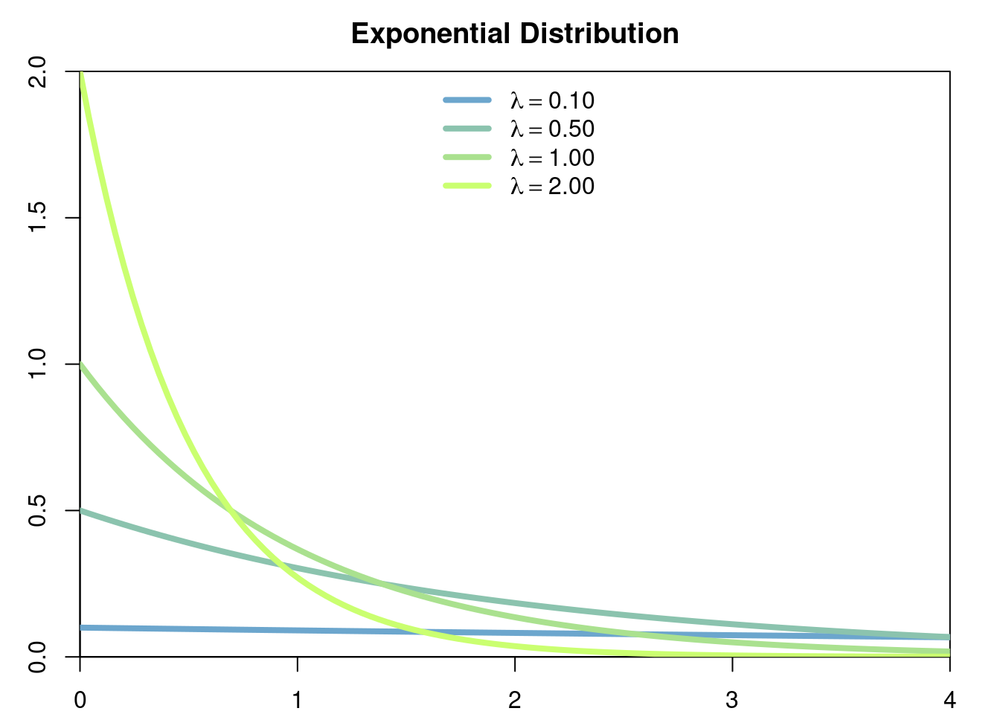

2 Probability Spaces and Random Variables
2.1 Probability Spaces
Let \(\Omega\) be a set and let \(\mathcal{P}(\Omega)\) be its power set, i.e. the family \(\left\{A\colon A\subset \Omega\right\}\).
Definition 2.1 A family of sets \(\mathscr{F}\subset \mathcal{P}\left(\Omega\right)\) is called a \(\sigma\)-algebra if it has the following properties:
\(\Omega\in\mathscr{F}\) and \(\emptyset\in\mathscr{F}\).
If \(A\in\mathscr{F}\) then \(A^c\in\mathscr{F}\).
If \((A_n)_{n\in\mathbb{N}}\subset\mathscr{F}\) is a countable collection of subsets in \(\mathscr{F}\), then \[\bigcup_{n=1}^\infty A_n\in\mathscr{F}.\] I.e. \(\mathscr{F}\) is closed under countable unions.
The pair \((\Omega,\mathscr{F})\) is called a measurable space.
Definition 2.2 Let \((\Omega,\mathscr{F})\) be a measurable space. A function \[\mathbb{P}\colon \mathscr{F}\to \mathbb{R}^+\] is called a probability measure if it satisfies the following properties:
\(\mathbb{P}(\Omega) = 1\) and \(\mathbb{P}(\emptyset)=0\).
\(\mathbb{P}(A)\geq 0\) for all \(A\in\mathscr{F}\).
- If \((A_n)_n\subset \mathscr{F}\) is a countable collection of pairwise disjoint sets, i.e. \[ A_i \bigcap A_j = \emptyset \quad \forall i\neq j, \] then \[ \mathbb{P}\left(\bigcup_n A_n\right) = \sum_n \mathbb{P}(A_n). \] The triplet \((\Omega,\mathscr{F},\mathbb{P})\) is called a probability space.
2.1.1 First Examples
Example 2.1 Set
- \(\Omega=[0,1]\),
- \(\mathscr{F}=\mathscr{B}([0,1])\) (safely ignore), and
- \(\mathbb{P}(A)=length(A)\)
- E.g. If \(A=[a,b]\) then \(\mathbb{P}(A)=b-a\)
Example 2.2 Set
- \(\Omega=[0,1]^n\),
- \(\mathscr{F}=\mathscr{B}([0,1]^n)\) (safely ignore), and
- \(\mathbb{P}(A)=volume(A)\),
- E.g. If \(n=2\) and \(A=[a,b]\times[c,d]\) then \(\mathbb{P}(A)=(b-a)(d-c)\).
- E.g.
In this case \(\mathbb{P}\left(A\right)=\sum_{n=1}^\infty \left(\frac{1}{2^2}\right)^n = 1/3\).
2.1.2 Important Examples
2.1.2.1 Probability Measures with Density on \(\mathbb{R}\) (or \(\mathbb{R}^+\), etc)
Definition 2.3 (Probability Measure with Density) Let \(f\colon D\subset\mathbb{R}\to \mathbb{R}^+\) be such that \(\int_D f(x)\hspace{3pt}dx = 1\). Such an \(f\) is called a density function on \(D\). Set
- \(\Omega=D\),
- \(\mathscr{F}=\mathscr{B}(D)\) (safely ignore), and
- \(\mathbb{P}(A)=\int_{A\cap D} f(x) \hspace{3pt}dx\) 1
- E.g. If \(D=\mathbb{R}\) and \(A=[a,b]\) then \(\mathbb{P}(A)=\int_a^b f(x)\hspace{3pt}dx\).
Example 2.3 (Exponential Measure) Let \(D=\mathbb{R}^+\). For any \(\lambda>0\) set \[f(x)= \lambda e^{-\lambda x},\] \(f\) satisfies \[\int_0^\infty f(x) \hspace{3pt}dx=\int_0^\infty \lambda e^{-\lambda x} \hspace{3pt}dx= 1.\]

Thus we may define a continuous probability measure \(\mathbb{P}\) on \(\mathbb{R}^+\) which satisfies, for example \[\mathbb{P}([a,\infty])=\int_a^\infty \lambda e^{-\lambda x}\hspace{3pt}dx=e^{-\lambda a}.\]

In this case \(\mathbb{P}[(2,\infty)]=\int_2^\infty 0.5e^{-0.5x}\hspace{3pt}dx = e^{-1}\).
2.1.2.2 Discrete Probability Measures on \(\mathbb{R}\) (or \(\mathbb{N}\), etc)
Definition 2.4 (Discrete Probability Measure) Let \((a_n)_n\subset\mathbb{R}\) be a countable collection of points in \(\mathbb{R}\) (resp. \(\mathbb{N}\), etc), and let \((p_n)_n\subset [0,1]\) be such that \[\sum_n p_n = 1.\] Set
- \(\Omega=\mathbb{R}\),
- \(\mathscr{F}=\mathscr{B}(\mathbb{R})\) (safely ignore),
- \[\mathbb{P}(A)=\sum_{n\colon a_n\in A}p_n \]
- E.g. If \(a_n=n\) for \(1\leq n \leq N\) and \(p_n=1/N\), then \(\mathbb{P}(\{1,2\}) = \frac{1}{N} + \frac{1}{N}=\frac{2}{N}\)
Example 2.4 (Geometric Measure) Let \(a_0=0, a_1=1, a_2=2, \dots\) and fix any \(p\in[0,1];\) define \(p_n=p^n(1-p)\) for \(n\in\{0,1,\dots\}\) and note that they satisfy \[ \begin{aligned} \sum_{n=0}^\infty p^n(1-p) &= (1-p)\sum_{n=0}^\infty p^n \\ &= \frac{1-p}{1-p} \\ &= 1. \end{aligned} \]

Thus we may define a probability measure \(\mathbb{P}\) on \(\mathbb{N}\) (or on \(\mathbb{R}\)). For any \(k\in \mathbb{N}\) this probability measure evaluated on the set \(\{0,\dots,k\}\) gives \[ \begin{aligned} \mathbb{P}(\{0,\dots,k\}) &= (1-p)\sum_{n=0}^k p^n \\ &= (1-p)\frac{1-p^{k+1}}{1-p}\\ &=1-p^{k+1}. \end{aligned} \]
2.2 Properties of Probability Measures
Theorem 2.1 Let \((B_n)_n\subset\mathscr{F}\) be a partition of \(\Omega\), i.e.
- \(\bigcup_n B_n = \Omega\), and
- \(B_n \bigcap B_m = \emptyset \quad \forall n\neq m\),

Theorem 2.2 Let \((\Omega,\mathscr{F}, \mathbb{P})\) be a probability space. The following equalities hold.
If \((A_n)_{n\in\mathbb{N}}\subset \mathscr{F}\) and \[ A_{n}\subset A_{n+1} \quad\forall n\in\mathbb{N}, \] then \[ \mathbb{P}\left(\bigcup_{n} A_n\right) = \lim_{n\to\infty} \mathbb{P}\left(A_n\right). \]
- If \((A_n)_{n\in\mathbb{N}}\subset \mathscr{F}\) and \[ A_{n+1}\subset A_{n} \quad\forall n\in\mathbb{N}, \] then \[ \mathbb{P}\left(\bigcap_{n} A_n\right) = \lim_{n\to\infty} \mathbb{P}\left(A_n\right). \]

2.3 Random Variables and CDFs
Example 2.5 Recall Example 2.1 where \(\Omega = [0,1]\) and \(\mathbb{P}(A)=length(A)\). Let \(N\in\mathbb{N}\) and define the function \(X\colon [0,1]\to\mathbb{N}\) given by
\[ X(\omega):=n \quad \text{ if }\quad \frac{n-1}{N} \leq \omega \leq \frac{n}{N}, \quad n\in\{1,\dots,N\}. \]
In this case \(X\) has the (discrete) uniform distribution on the set \(\{1,\dots, N\}\) since all the points have the same probability measure, that is \[ \forall i,j\in\{1, \dots, N\},\quad\mathbb{P}(X=i)=\frac{1}{N}=\mathbb{P}(X=j). \]a <- 0
b <- 3
x <- seq(a-2, b+2, length.out = 100)
par('plt' = c(0.08, 1-0.05, 0.08, 1-0.05), 'xaxs' = "r", 'yaxs' = "r")
plot(x = x, y = punif(x, min = a, max = b), type = "l", col = "skyblue3", lwd = 3)Exercise 2.3 Recall Example 2.4. Compute the CDF of the geometric distribution of parameter \(p\).
Exercise 2.4 Recall Example 2.3. Compute the CDF of the exponential distribution of parameter \(\lambda\).
p <- 0.75
x <- seq(-1, 6, length.out = 1000)
par('plt' = c(0.08, 1-0.05, 0.08, 1-0.05), 'xaxs' = "r", 'yaxs' = "r")
plot(x = x, y = pgeom(x, p = p), type = "p", col = "skyblue3", lwd = 1)
points(x = 0:5, y = pgeom(0:5, p = p), col = "red", lwd = 3, pch = 19)```
lambda <- 5
x <- seq(0, 6, length.out = 1000)
par('plt' = c(0.08, 1-0.05, 0.08, 1-0.05), 'xaxs' = "r", 'yaxs' = "r")
plot(x = x, y = pexp(x, rate = lambda), type = "l", col = "skyblue3", lwd = 3)Theorem 2.3 (Properties of CDFs) A function \(F\) is a cumulative distribution function if and only if
- \(F(-\infty):=\lim_{x\to-\infty}F(x)=0\) and \(F(\infty):=\lim_{x\to\infty}F(x)=1\).
- \(F\) is right continuous, i.e. for all \(y\in\mathbb{R}\), \(\lim_{x\downarrow y} F(x) = F(y)\).
- \(F\) is non-decreasing, i.e. for all \(x<y\), \(F(x)\leq F(y)\).
Theorem 2.4 is often useful in determining the distribution of a function of a random variable, say \(h(X)\), by attempting to compute \[ \mathbb{P}(h(X) \leq x) \] for all \(x\).
Definition 2.8 (Continuous and Discrete Random Variables) Let \(X\) be random variable.
- \(X\) is a continuous continuous random varible if \(F_X\) is continuous.
- \(X\) is a discrete random variable if \(F_X\) is piecewise constant.
In this course we will assume that continuous random variables have a probability distribution with a density (recall Definition 2.3 ), or,
in other words, we will assume that for any continuous random variable \(X\) with CDF \(F_X\), we have \(F_X'=f_X\) for some
density function \(f_X\) and
\[
F_X(x) = \int_{-\infty}^x f_X(s) \hspace{3pt}ds.
\]
2.4 Expectations and Moments
Definition 2.9 (Expectation) Let \(X\) be a random variable, \(h\colon \mathbb{R}\to\mathbb{R}\) be a function, and consider the random variable \(h(X)\).
If \(X\) is continuous with density \(f_X\), we define the expected value of h(X) as the integral \[ \mathbb{E}\left[h(X)\right] :=\int_{-\infty}^\infty h(x)f_X(x)\hspace{3pt}dx. \]
If \(X\) is discrete and takes values \((a_n)_n\) with probabilities \((p_n)_n\) we define the expected value of \(h(X)\) as the sum \[ \mathbb{E}\left[h(X)\right] :=\sum_{n} p_n h(a_n). \]
Example 2.10 (Mean of Normal Distribution) In this example we will assume the known fact that \[ \int_{-\infty}^\infty e^{-x^2} \hspace{3pt}dx = \sqrt{\pi}. \]
Let \(X\) be a random variable with density function \[ f(x) = \frac{e^{-\frac{(x-\mu)^2}{2\sigma^2}}}{\sigma\sqrt{2\pi}}. \]
The distribution associated to this density function is called the normal distribution (with mean \(\mu\) and variance \(\sigma^2\)). Then the expected value (mean) of \(X\) is given by
\[ \begin{aligned} \mathbb{E}\left[X\right] &= \int_{-\infty}^\infty x \frac{e^{-\frac{(x-\mu)^2}{2\sigma^2}}}{\sigma\sqrt2\pi} \hspace{3pt}dx\\ &= \int_{-\infty}^\infty (\sigma\sqrt{2}y+\mu) \frac{e^{-y^2}}{\sigma\sqrt{2\pi}} \sigma\sqrt{2}\hspace{3pt}dy\\ &= \int_{-\infty}^\infty \sigma\sqrt2 y \frac{e^{-y^2}}{\sqrt{\pi}}\hspace{3pt}dx + \frac{\mu}{\sqrt\pi} \int_{-\infty}^\infty e^{-y^2}\hspace{3pt}dy. \end{aligned} \]
where we have used the change of variable y=. Now observe that the function \(e^{-y^2}\) is symmetric around 0, therefore
\[ \int_{-\infty}^0 \sigma\sqrt2 y \frac{e^{-y^2}}{\sqrt{\pi}}\hspace{3pt}dx = - \int_0^\infty \sigma\sqrt2 y \frac{e^{-y^2}}{\sqrt{\pi}}\hspace{3pt}dx, \]
which implies
\[ \int_{-\infty}^\infty \sigma\sqrt2 y \frac{e^{-y^2}}{\sqrt{\pi}}\hspace{3pt}dx = 0. \]
Thus
\[ \mathbb{E}\left[X\right] = \mu. \]
Let \(\lambda > 0\). Let \(X\) be the discrete random variable with distribution given by \[ \mathbb{P}(X = n) = e^{-\lambda} \frac{\lambda^n}{n!},\quad \forall n\in\mathbb{Z}^+=\{0,1,2,\dots\} \]
Exercise 2.6 Argue why this is a valid definition of a discrete random variable.
A random variable with the above distribution is called a Poisson random variable of parameter \(\lambda\). The expected value of \(X\) is given by \[ \begin{aligned} \mathbb{E}[X] &= e^{-\lambda}\sum_{n=0}^\infty n \frac{\lambda^n}{n!} \\ &= e^{-\lambda}\sum_{n=1}^\infty n \frac{\lambda^n}{n!} \\ &= \lambda e^{-\lambda}\sum_{n=0}^\infty \frac{\lambda^{n-1}}{(n-1)!}\\ &= \lambda \end{aligned} \]
Theorem 2.5 (Linearity of Expected Values) Let \(X\) and \(Y\) be two random variables. Then
\[\mathbb{E}[X + bY] = \mathbb{E}[X] + b\mathbb{E}[Y].\]

Exercise 2.9 (Variance of Exponential Distribution) Prove that if \(X\) is exponentially distributed with parameter \(\lambda>0\), then \[ \mathbb{Var}(X) = \frac{1}{\lambda^2}. \]
Let \(f\colon \mathbb{R}\to\mathbb{R}\) be a function and \(A\subset \mathbb{R}\). Let \(\mathbb{1}_A\) be the indicator function of \(A\), i.e. the function \[ \mathbb{1}_A(x) \begin{cases} 1 & \text{ if } x\in A\\ 0 & \text{ otherwise}, \end{cases} \] then the integral of \(f\) on the set \(A\) is defined as \[ \int_A f(x)\hspace{3pt}dx = \int_{-\infty}^\infty \mathbb{1}_A(x)f(x) \hspace{3pt}dx. \] For example, if \(A=[a,b]\cup [c,d]\), then \[ \int_A f(x)\hspace{3pt}dx = \int_a^b f(x) \hspace{3pt}dx + \int_c^d f(x) \hspace{3pt}dx. \] ↩